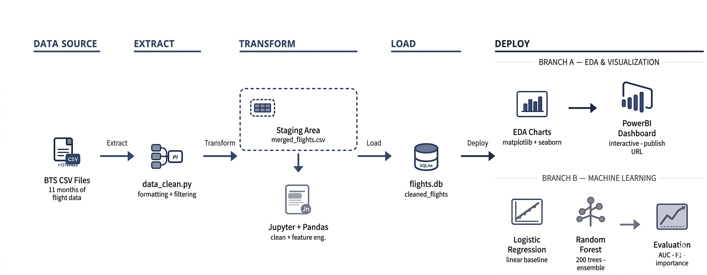
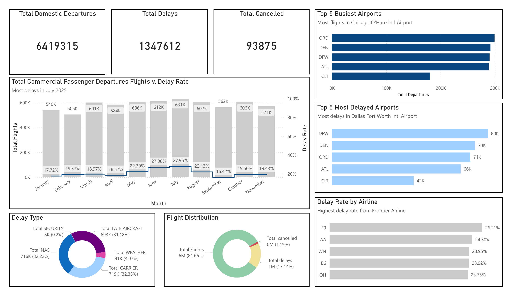

Introduction
Over the past five years, U.S. domestic flight performance has continued to fluctuate after recovering from COVID-19 and other unexpected economic or natural events.
Thousands of delays and cancellations have been caused by weather events, staffing shortages, operational disruptions, and air traffic control constraints.
These disruptions affect passengers, airline operations, and airport logistics.
In this project, we analyze the U.S. domestic flight performance dataset from January to November 2025, which includes over 7 million records of flight data points.
We aim to identify patterns and trends in flight performance, understand the factors contributing to delays and cancellations, and explore potential predictive models for future flight performance.
Finally, we will go through three stages of data analysis: 1) Exploratory Data Analysis, 2) Descriptive Analysis, and 3) Explanatory Analysis.
Workflow

Dashboard
